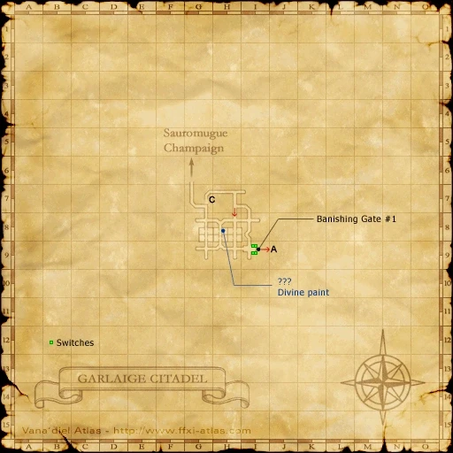

Quest overview
| NPC | Quest | Reward |
|---|---|---|
| ??? (Weighted Stones) Garlaige Citadel, Map 1 (G-8) | Garlaige Citadel Gate Access No level requirement | Pouch of Weighted Stones Permanent key item · Free |
Requirements
Any job and level. No fame, mission or quest prerequisite is checked by the acquisition event. You must not already own the key item. Nearby enemies still pose a threat.
Zenith availability: This target is hidden in the reviewed Zenith setup. Weighted Stones v1.0 corrects its availability; installation and an in-game check are pending. No level or prior quest unlocks it.
Walkthrough
- Enter present-day Garlaige Citadel from Sauromugue Champaign and descend the entrance stairs. Use Map 1, not Garlaige Citadel [S].
- Continue straight at the first four-way junction. Before the hole in the floor, enter the first room on your right, at (G-8).
- Look for ??? on a small rock on the left, near the doorway leading into the next room. This is a floor-level target, not a ceiling target.
- Examine ??? and accept taking the stones. The event awards Pouch of Weighted Stones immediately. No item trade, fee or battle is required.
- Confirm it in Permanent Key Items. Receive the key item at the same ???; no return trip.
- Select a closed Banishing Gate to open it. After a brief delay, the door opens for 15 seconds; pass through promptly. Keep the key item for future visits.
Map

Map: HorizonXI Wiki. Original game map © SQUARE ENIX.

If you cannot find it
- Check the zone name: Garlaige Citadel, present-day, Map 1 (G-8).
- Use the small rock near the inner doorway. Other ??? targets in the same dungeon serve different quests.
- If the target is absent in this room, check the Zenith availability note above. If the target says nothing is out of the ordinary, check whether you already have the key item.
Related quests
Useful when passing the gates for In Defiant Challenge, artifact equipment and other dungeon objectives. Gate access does not complete those objectives.